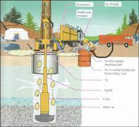

Jeoteknik sondaj, inşaat veya araştırma çalışması yapılacak alanda temel birimini oluşturan zemin ya da kaya hakkında detaylı bilgilere ulaşmak amacıyla delik açma ve açılan bu delikte temel biriminin teknik yapısı hakkında bilgi edinme çalışmasına verilen isimdir. Özel olarak üretilmiş sondaj makineleriyle yapılan işlemi, ihtiyaç duyulan ekipman ve gereçleri kullanma beceri ve ehliyetine sahip uzmanlar gerçekleştirir. Mühendislerin çalışma yapacakları alanın zemin yapısı hakkında bilgi edinmek amacıyla gerçekleştirilen jeoteknik sondaj, her zemin için farklı şekillerde planlanır. Araştırma ve etüt çalışması sonucunda elde edilen bulgular ise uzmanlar tarafından rapor haline getirilerek proje çalışmalarını gerçekleştirecek olan ekibe sunulur. Bu sayede yeni başlayacak olan projelerin en doğru bakış açısı ve teknikle planlanması sağlanır.
Proje alanındaki temel birimi oluşturan zemin veya zeminlerin bütün mühendislik özelliklerini yansıtacak sayıda ve derinlikte jeoteknik sondaj yapılır. Zeminin delinme işlemi esnasında ise arazide kullanım için yeterli donanımda tasarlanmış zemin sondaj makinesi tercih edilir ve profesyonel bir ekibin araştırmaları sonucunda zemin için uygun gördüğü teknikle delme çalışması tamamlanır. Sondaj ekibi, açtığı sondaj kuyularından proje ekibinin talep ettiği derinliklerden yeterli sayıda zemin (SPT, UD vb.) ve kaya (CR vb.) numunelerini alır.

Numuneler, örselenmeden ve herhangi bir müdahale görmeden doğrudan laboratuvara gönderilir. Laboratuvarda numuneler üzerinde bir takım deneyler uygulanır. Bu deneyler yardımıyla; zeminlerin cinsi, içerik (çakıl, silt-kil, kum) yüzdeleri, hidrometre (kil) analizi, tanelerin çapı (elek analizi), likit limiti, plastik limiti ve plastisite indisi (atterberg limitleri), kohezyon ve içsel sürtünme açısı (üç eksenli hücre kesme deneyi, direkt kesme deneyi), su içeriği, doğal, kuru ve doygun birim hacim ağırlığı, kayaçların petrografik özelliği, nokta yükü basınç dayanımı, tek eksenli basınç dayanımı, doğal birim hacim ağırlığı, yoğunluğu gibi değerler belirlenir. Kaya birimler için toplam karot verimi (TCR), kaya kalite değeri (RQD), kaya kütle indeksi (RMR) gibi değerler sondaj çalışmaları sırasında sahada hesaplanır.
Sondajlar sırasında yapılan SPT (standart penetrasyon deneyi), CPT (konik penetrasyon deneyi), presiyometre deneyi, arazi kanatlı kesme (veyn) deneyi, dilatometre deneyi gibi is-situ deneyleri ile jeoteknik sondajlar detaylandırılır. Projenin ihtiyacına göre plaka yükleme, CBR (Kaliforniya taşıma kapasitesi), şişme yüzdesi, standart proktor deneyi, BST (Paker, basınçlı su testi), permeabilite deneyi ve inklinometre ölçümleri uygulanabilir.
Temel birimini oluşturan zeminler hakkındaki detaylı ve kesin sonucu, numuneler üzerine uygulanan laboratuvar deneylerinin ve arazide uygulanan deneylerin yorumlanması belirler. Böylece zeminin planlanan çalışmaya uygun olup olmadığı ya da planlanan çalışmanın hangi mühendislik aşamalarından (zemin iyileştirme yöntemleri, tavsiyeler vb.) sonra hayata geçebileceği gibi konular açıklık kazanır.
Türkiye’de jeoteknik sondaj alanında uluslararası standartlarda hizmet veren az sayıdaki firmadan biri de dır. Denizli merkezli olan ve Türkiye çapında son derece etkili ve kaliteli bir şekilde hizmet veren firma, dünya standartlarına uygun sondaj makineleri, cihazları ve uzman ekibiyle projelerinizde son derece başarılı zemin araştırmalarına imza atar. Teknik Yer Bilimleri; Çevre ve Şehircilik Bakanlığı Zemin ve Temel Etüdü Uygulama Esasları ve Rapor Formatı, DSİ Jeoteknik Etüt Şartnamesi, DSİ Temel Sondaj ve Enjeksiyon Teknik Şartnamesi, Karayolu Teknik Şartnamesi ve İller Bankası Anonim Şirketi Zemin Etüt Teknik Şartnamesi ve diğer kabul görmüş şartnamelere uygun çalışmalarda bulunarak dilediğiniz tüm işlemleri büyük bir profesyonellikle gerçekleştirir.
Eğer siz de projeleriniz için alanında uzman ve güvenilir bir ekip arıyorsanız bizimle hemen iletişime geçebilirsiniz.
Tesislerin , konutların ve tarlaların su ihtiyacını yeraltı suyundan karşılamak amacı ile yapılan çalışmalara su sondaj işlemi denir. Bu sondajlar formasyonun durumuna göre 2 farklı yöntemle yapılır.
a)Direct Circulasion (Direk sirkilasyonlu sondaj metodu) b)Reverse Circulasion (Ters sirkülasyonlu sondaj metodu) Kumlu veya aliviyon zeminlerde delme esnasında yıkıntı ve dökülmeyi engelleyerek sondaj sırasında oluşabilecek riskleri ortadan kaldırır. Statik seviyesi düşük bölgelerde kuyunun derin metraj açılmasına olanak tanır. Çok geniş çapta kuyu açılabilir.